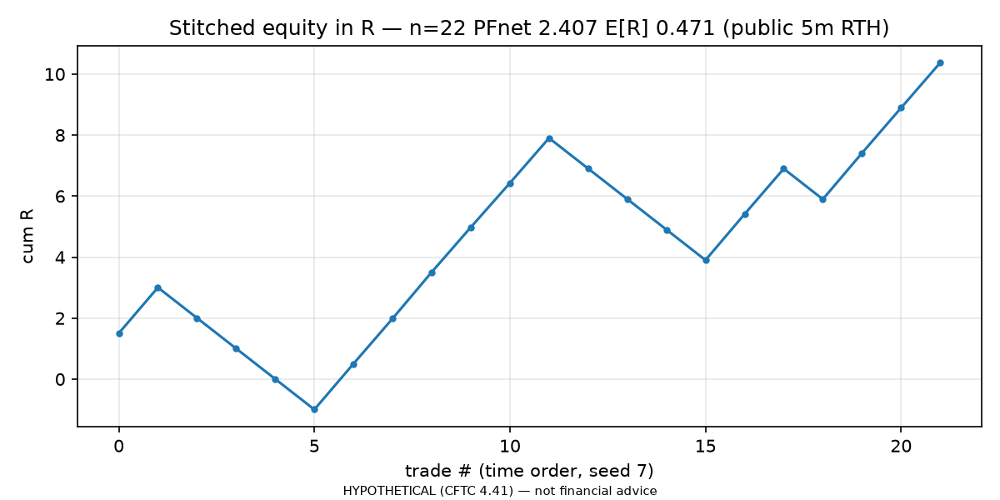
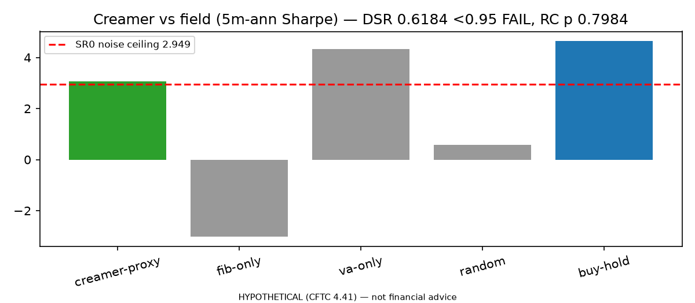
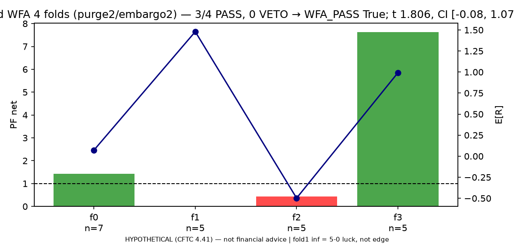
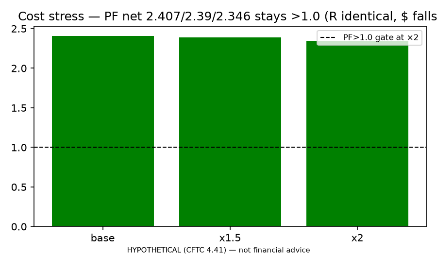

REJECT as edge / HOLD as program. Frozen SPEC v1.0, seed 7, public 5m NQ RTH n=950.
python3 src/exp00_synthetic.py → loc/absorp/fail2 True, n=1.python3 src/exp04_public_intraday.py → 78 hits → 40 blocked → n=22, PF 2.39.python3 src/exp05_benchmarks.py → DSR 0.62 FAIL, RC 0.80 FAIL, buy-hold wins.python3 src/exp07_wfa_mc.py → 3/4 PASS but t 1.81, CI includes 0, MC degenerate.python3 src/exp06_paper.py → docs/PAPER_RESULTS.md. Tape + GEX remain TODO.



HYPOTHETICAL (CFTC 4.41) — not financial advice.